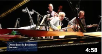
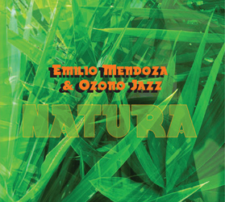

INFO: FUNCIÓN | INTEGRANTES | TARIFAS | DISTRIBUCIÓN
| RIDER |
I N I C I O
AÑOS:
2005 - 09 | 2010 | 2011 | 2012 | 2013 | 2014 | 2015 |
2016 | 2017 | 2018 | 2019 | 2021 | 2022 | 2023 |
 C O N C I E
R T O S & A C T I V I D
A D E S
C O N C I E
R T O S & A C T I V I D
A D E S
2 0 2 0 (12)
I N I C I O
AÑOS:
2005 - 09 | 2010 | 2011 | 2012 | 2013 | 2014 | 2015 |
2016 | 2017 | 2018 | 2019 | 2021 | 2022 | 2023 |
2 0 2 0 (12)
Enero
Febrero
Marzo
Abril
Mayo
Julio
Septiembre
Octubre
Lunes, 06-01-2020
Estreno en YouTube del video "Resplandor" de la presentación en el Club Jóspital, La Laguna, Tenerife, el 23-11-2019, con Emilio Mendoza (Guitarra), Steve Russo (Cajón), Jenka Nordholm (Djembé) y Marie Bruess (Voz). Como se montó en el canal personal de Emilio por error y no en el de Ozono, se borró y se volvió a estrenar más tarde en abril.
Febrero


Jueves, 06-02-2020, 2:30 pm
Prestreno del video Guarapiche Blues, con asistencia de los estudiantes, el director Jorge Gómez Plazola y los grandes personajes del cine venezolano Leopoldo Izaguirre y Roman Chalbaud, la compositora Beatriz Bilbao, así como la celebración del cumpleaños de la directora y coproductora del video, María Cristina Capriles. Emilio dio un concierto solo con su guitarra. Sede de ESCINETV, Escuela de Cine y Televisión, Caracas,
Sábado, 22-02-2020, 11:00 am
Velorio de Chaba de Girón, anterior administradora de FUNDEF cuando yo era presidente, (1995-97), esposa de mi gran amigo Israel Girón, director de la ODILA, La Guairita, Caracas.


Sábado, 14-02-2020
Estreno del CD Guarapiche Blues en sus dos versiones, en español e inglés, en el canal de Ozono Jazz en YouTube, música + info sobre las piezas en un solo documento. Estos dos videos se borraron después de tener mas de 100 visitas, por preferirse la opción de Distrokid.


Marzo
Cuarentena por Coronavirus, editando videos y mejorando el canal de YouTube, trabajando con la diseñadora Mónica Ambrosio sobre la edición del CD en español e inglés.
Abril
Viernes, 03-04-2020
Estreno en YouTube del video "Resplandor" ahora en el canal de Ozono.
Martes, 14-04-2020
Se monta todo el CD Guarapiche Blues en Distrokid.com, para salir en iTunes, Spotify, YouTube Music, Amazon y muchos otros portales de distribución de música.
 EncantoEspirales
Miércoles, 29-04-2020 (Emilio, Juan y Lizardo)
Estreno en YouTube de los videos "Dos Joroponovos: Encanto (joroponovo arpeado) y Espirales (joroponovo bandoleado)", ejecutados en vivo. Son segmentos del video documental de ESCINETV, dirección María Cristina Capriles, sobre el concierto Homenaje al Maestro Alfredo del Mónaco, Sala de Conciertos, Unearte, Caracas, el 17 de julio, 2016, bajo la dirección de Beatriz Bilbao.
Emilio hace el comentario antes del inicio de Espirales sobre la solicitud formal presentada a la Comisión de Ambiente, Asamblea Nacional, de enmienda constitucional, Art. 127, sobre el cuidado del entorno sonoro natural. Para más información al respecto, ver al final de la página de INICIO. Curiosamente, los dos videos se montaron en YouTube sin saber que ese día era el cumpleaños de Alfredo del Mónaco y al mismo tiempo era el cuarto mes de abril, Día Mundial de Consciencia del Ruido. Esto lo supe en la noche. Fueron tres coincidencias muy altas, sin saberlo.
Mayo

Sábado, 2 de mayo, 2020
Estreno de Natura en Dristokid.com
Domingo, 3 de mayo 2020
Estreno de Laberinto Dúo en Dristokid.com
Cuarentena por Coronavirus, editando videos y mejorando el canal de YouTube, trabajando con la diseñadora Mónica Ambrosio sobre la edición del CD físico en español e inglés, camisetas y tarjeticas.

Julio
Viernes, 26-07-2020
Estreno en YouTube del video ver 3 final de Guarapiche Blues. Ver video.
Septiembre
19-09-2020
Concierto en línea en el aniversario de la muerte de María Rivas. Añoranza, Emilio, guitarr
Octubre
10 de octubre, 2020
50 ejemplares impresos del CD Guarapihe Blues en español.

{kind=link}